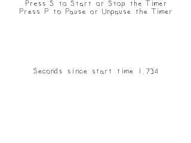

Advanced Timers

Last Updated 3/16/14
Now that've made a basic timer with SDL, it's time to make one that can start/stop/pause.//The application time based timer
class LTimer
{
public:
//Initializes variables
LTimer();
//The various clock actions
void start();
void stop();
void pause();
void unpause();
//Gets the timer's time
Uint32 getTicks();
//Checks the status of the timer
bool isStarted();
bool isPaused();
private:
//The clock time when the timer started
Uint32 mStartTicks;
//The ticks stored when the timer was paused
Uint32 mPausedTicks;
//The timer status
bool mPaused;
bool mStarted;
};
For these new features, we're going to make a timer class. It has all the basic function to start/stop/pause/unpause the timer and check its status. In terms of data members,
we have the start time like before, a variable to store the time when paused, and status flags to keep track of whether the timer is running or paused.
LTimer::LTimer()
{
//Initialize the variables
mStartTicks = 0;
mPausedTicks = 0;
mPaused = false;
mStarted = false;
}
Our constructor initializes the internal data members.
void LTimer::start()
{
//Start the timer
mStarted = true;
//Unpause the timer
mPaused = false;
//Get the current clock time
mStartTicks = SDL_GetTicks();
mPausedTicks = 0;
}
The start function sets the started and paused flags, gets the timer's start time and initializes the pause time to 0. For this
timer, if we want to restart it we just call start again. Since we can start the timer if it is paused and/or running, we should make sure to clear out the paused data.
void LTimer::stop()
{
//Stop the timer
mStarted = false;
//Unpause the timer
mPaused = false;
//Clear tick variables
mStartTicks = 0;
mPausedTicks = 0;
}
The stop function basically reinitializes all the variables.
void LTimer::pause()
{
//If the timer is running and isn't already paused
if( mStarted && !mPaused )
{
//Pause the timer
mPaused = true;
//Calculate the paused ticks
mPausedTicks = SDL_GetTicks() - mStartTicks;
mStartTicks = 0;
}
}
When pausing, we want to check if the timer is running because it doesn't make sense to pause a timer that hasn't started. If the timer is running, we set the pause flag, store the
time when the timer was paused in mPausedTicks, and reset the start time.
void LTimer::unpause()
{
//If the timer is running and paused
if( mStarted && mPaused )
{
//Unpause the timer
mPaused = false;
//Reset the starting ticks
mStartTicks = SDL_GetTicks() - mPausedTicks;
//Reset the paused ticks
mPausedTicks = 0;
}
}
So when we unpause the timer, we want to make sure the timer is running and paused because we can't unpause a timer that's stopped or running. We set the paused flag to false and
set the new start time.
Say if you start the timer when SDL_GetTicks() reports 5000 ms and then you pause it at 10000ms. This means the relative time at the time of pausing is 5000ms. If we were to unpause it when SDL_GetTicks was at 20000, the new start time would be 20000 - 5000ms or 15000ms. This way the relative time will still be 5000ms away from the current SDL_GetTicks time.
Say if you start the timer when SDL_GetTicks() reports 5000 ms and then you pause it at 10000ms. This means the relative time at the time of pausing is 5000ms. If we were to unpause it when SDL_GetTicks was at 20000, the new start time would be 20000 - 5000ms or 15000ms. This way the relative time will still be 5000ms away from the current SDL_GetTicks time.
Uint32 LTimer::getTicks()
{
//The actual timer time
Uint32 time = 0;
//If the timer is running
if( mStarted )
{
//If the timer is paused
if( mPaused )
{
//Return the number of ticks when the timer was paused
time = mPausedTicks;
}
else
{
//Return the current time minus the start time
time = SDL_GetTicks() - mStartTicks;
}
}
return time;
}
Getting the time is a little bit tricky since our timer can be running, paused, or stopped. If the timer is stopped, we just return the initial 0 value. If the timer is paused, we
return the time stored when paused. If the timer is running and not paused, we return the time relative to when it started.
bool LTimer::isStarted()
{
//Timer is running and paused or unpaused
return mStarted;
}
bool LTimer::isPaused()
{
//Timer is running and paused
return mPaused && mStarted;
}
Here we have some acccessor functions to check the status of the timer.
//Main loop flag
bool quit = false;
//Event handler
SDL_Event e;
//Set text color as black
SDL_Color textColor = { 0, 0, 0, 255 };
//The application timer
LTimer timer;
//In memory text stream
std::stringstream timeText;
Before we enter the main loop, we declare a timer object and a string stream to turn the time value into text.
else if( e.type == SDL_KEYDOWN )
{
//Start/stop
if( e.key.keysym.sym == SDLK_s )
{
if( timer.isStarted() )
{
timer.stop();
}
else
{
timer.start();
}
}
//Pause/unpause
else if( e.key.keysym.sym == SDLK_p )
{
if( timer.isPaused() )
{
timer.unpause();
}
else
{
timer.pause();
}
}
}
When we press s key, we check if the timer is started. If it is, we stop it. If it isn't, we start it. When we press p, we check if the timer is paused. If it is, we unpause it.
Otherwise we pause it.
//Set text to be rendered
timeText.str( "" );
timeText << "Seconds since start time " << ( timer.getTicks() / 1000.f ) ;
//Render text
if( !gTimeTextTexture.loadFromRenderedText( timeText.str().c_str(), textColor ) )
{
printf( "Unable to render time texture!\n" );
}
//Clear screen
SDL_SetRenderDrawColor( gRenderer, 0xFF, 0xFF, 0xFF, 0xFF );
SDL_RenderClear( gRenderer );
//Render textures
gStartPromptTexture.render( ( SCREEN_WIDTH - gStartPromptTexture.getWidth() ) / 2, 0 );
gPausePromptTexture.render( ( SCREEN_WIDTH - gPausePromptTexture.getWidth() ) / 2, gStartPromptTexture.getHeight() );
gTimeTextTexture.render( ( SCREEN_WIDTH - gTimeTextTexture.getWidth() ) / 2, ( SCREEN_HEIGHT - gTimeTextTexture.getHeight() ) / 2 );
//Update screen
SDL_RenderPresent( gRenderer );
Before we render, we write the current time to a string stream. The reason we divide it by 1000 is because we want seconds and there are 1000 milliseconds per second.
After that we render the text to a texture and then finally draw all the textures to the screen.
After that we render the text to a texture and then finally draw all the textures to the screen.